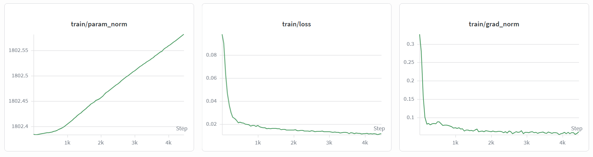

Robotic Teleoperation Replay and Data Collection
XleRobot Embodiment · π0.5 Foundation Model
We designed, assembled, and programmed an XleRobot, a low-cost dual-arm mobile platform, entirely within this quarter, and built the first teleoperation record-and-replay system for this embodiment. Using keyboard teleoperation and a custom skill capture pipeline, we collected a 50-episode dataset for a block pick-up task and fine-tuned the π0.5 action expert on it.
Our first approach, deploying π0.5 fine-tuned on an external dataset from a similar embodiment, failed even after building a custom joint mapping. We pivoted, first to spatial room mapping (which worked), then, with course guidance, to teleoperation replay and data collection. The delivered endpoint is working teleoperation, replay, the collected dataset, and a trained checkpoint. Deploying that checkpoint on hardware remains future work due to cloud GPU costs.
Project teaser: teleoperation replay on XleRobot
What is new here, stated plainly:
The first teleoperation record-and-replay system for the XleRobot embodiment. Keyboard teleop drives the robot while a capture pipeline logs joint states, and any recorded episode can be re-enacted deterministically on hardware.
The first cloud π0.5 pipeline for this embodiment: action-expert fine-tuning built entirely in Google Colab with checkpoint extraction, plus a RunPod (RTX 5090) inference setup for deployment.
50 teleoperated episodes of a block pick-up skill, collected on our own embodiment with the capture pipeline and used to fine-tune the π0.5 action expert (training curves below).
Fine-tuning on data from a similar embodiment with different motors did not produce a working policy, even after a custom joint mapping. In-distribution data proved necessary.
The system spans motor sensing, teleoperation and capture, replay, and a training and deployment pipeline.
Each sts3215 servo has a built-in 12-bit magnetic encoder using two Hall elements (Bx, By) to read shaft angle. This gives accurate, repeatable joint sensing, the basis for faithful replay. Other servos can also be used on the arms, which matters for the cross-embodiment failure described below.
We first tried Xbox controller teleoperation and abandoned it as imprecise and unintuitive. Keyboard teleop worked. A custom capture pipeline logs joint positions at each timestep during teleoperation, so every session doubles as dataset recording.
Recorded episodes are played back deterministically on the hardware by streaming the logged joint targets. This is the replay shown in the demo videos.
We built an action-expert fine-tuning pipeline for π0.5 entirely in Google Colab, ran 6+ hour training jobs, and extracted checkpoints throughout. The pipeline was used twice: first on the external dataset, then on our own.
Inference runs on a RunPod RTX 5090 with a network volume for checkpoints. Observations stream to the pod and actions stream back to the robot. Upload speed for checkpoints and datasets was a recurring bottleneck.
Video demonstrations of teleoperation and replay across all camera views.
Left Hand
Head
Right Hand
After collecting the 50-episode block pick-up dataset, we fine-tuned the π0.5 action expert on it in Colab. The Weights & Biases curves below show loss dropping from about 0.08 to under 0.02 over roughly 4,500 steps with stable gradient norms. This checkpoint is trained but not yet deployed (see Challenges).

What did not work, in the order we hit it:
The dataset is collected and the checkpoint is trained. The remaining steps are:
If you find this work useful, please cite:
@misc{ocampo2026roboticreplay,
title = {Robotic Replay: Teleoperation Replay and Data Collection},
author = {Ocampo, Cristian and Mohanty, Raj},
year = {2026},
note = {Project Report}
}